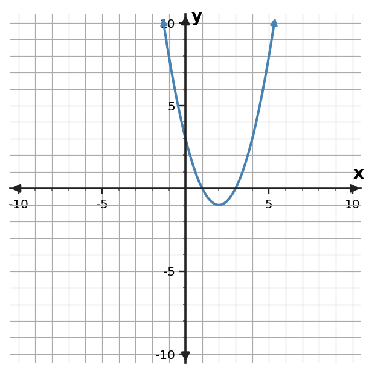
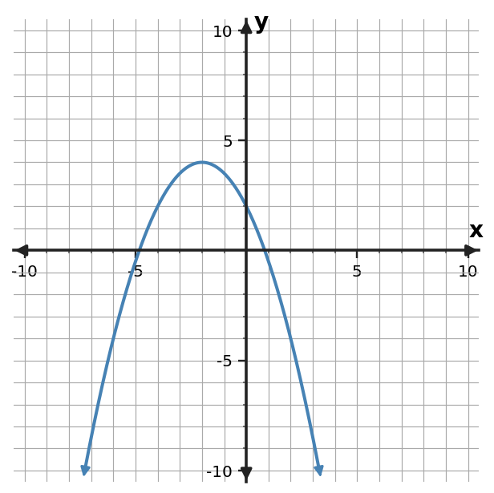

Polynomial Structure and Quadratic Graphs
Function Families and Transformations
Different forms reveal different features of the same quadratic relationship.
Learning Target
Students will connect polynomial expressions to quadratic graphs and key features.
- I can construct connections between polynomial structure, quadratic graphs, and key features.
- I can predict graph features from equivalent quadratic expressions.
- I can critique whether a polynomial expression supports a claimed vertex, intercept, axis of symmetry, or direction of opening.
Vocabulary / Key Notation Preview
quadratic · parabola · vertex · axis of symmetry · intercept
Sort the vocabulary. Write each vocabulary word in the column that best matches what you know right now. You may move a word later.
| Know for sure | Recognize | Don't know yet |
|---|---|---|
What's to Come
DO NOT SOLVE IT YET.
Circle anything familiar, underline symbols, labels, conditions, data, or features that seem important, and write short notes about what you think may matter later.
The table and graph describe the same quadratic relationship. Identify at least three features that can be seen in one or both representations, and explain which representation makes each feature easiest to notice.
| x | y |
|---|---|
| 0 | 3 |
| 1 | 0 |
| 2 | -1 |
| 3 | 0 |
| 4 | 3 |

Teaching note: Ask students to circle likely vertex/intercept/symmetry evidence in the table and graph. Keep the discussion observational; do not formalize feature-reading rules yet.
Let's Get Started
Skim the section. Record what catches your attention before you read closely.
| What I noticed | |
|---|---|
| What I predict | |
| What I wonder |
Annotate the words and visuals together. Underline evidence, circle or highlight bold vocabulary, label arrows, measurements, or important features, connect sentences to figures, and jot short questions or connections in the margins.
I can construct connections between polynomial structure, quadratic graphs, and key features.
A quadratic function has a graph called a parabola. Its polynomial structure and graph features are two descriptions of the same relationship. The leading coefficient controls the direction of opening: a positive leading coefficient opens upward and a negative one opens downward.
The graph's turning point is the vertex. A vertical line through the vertex is the axis of symmetry, and points equally far left and right of that axis have the same y-value. A table often reveals this symmetry through mirrored outputs.
An intercept is where the graph crosses an axis. The y-intercept comes from setting $x=0$, so in expanded form $y=ax^2+bx+c$, the point $(0,c)$ is visible immediately. X-intercepts come from setting $y=0$; when the quadratic is factored, each factor can reveal a zero directly.
No single form shows every feature equally well. The graph shows the overall shape and vertex clearly, the table shows numerical symmetry, expanded form exposes the leading coefficient and y-intercept, and factored form can expose x-intercepts. Connecting these views turns features into evidence rather than guesses.
- What does the sign of the leading coefficient tell you about a parabola?
- How does a table show evidence for an axis of symmetry?
- Which feature is immediately visible from $y=ax^2+bx+c$ by setting $x=0$?
Teacher answers: 1) Positive opens up; negative opens down. 2) Pairs of inputs equally spaced from the axis have equal outputs, with the vertex at the center/extreme value. 3) The y-intercept $(0,c)$. Listen for evidence tied to the reading/representation rather than answer-only language.
| Representation/form | Features it often reveals well |
|---|---|
| Graph | vertex, axis of symmetry, opening, intercept locations |
| Table | mirrored outputs, vertex value, zeros at listed inputs |
| Expanded $ax^2+bx+c$ | opening from $a$, y-intercept from $c$ |
| Factored $a(x-r_1)(x-r_2)$ | x-intercepts $r_1,r_2$; axis midway between them |
Example 1
For $y=(x+2)(x-3)$, predict the x-intercepts and axis of symmetry before graphing.
Teacher answer: x-intercepts $(-2,0)$ and $(3,0)$; axis of symmetry $x=0.5$.
You Try It 1
For $y=x^2 - 2x - 3$, identify the y-intercept and the direction of opening.
Teacher answer: The y-intercept is $(0,-3)$, and the parabola opens upward because the leading coefficient is 1.
- If a factored quadratic has zeros at $x=-2$ and $x=6$, where must its axis of symmetry lie?
Teacher answer: At the midpoint, $x=2$.
Example 2
For $y=-x^2 + 2x + 3$, identify the y-intercept and the direction of opening.
Teacher answer: The y-intercept is $(0,3)$, and the parabola opens downward because the leading coefficient is -1.
You Try It 2
Use the table to identify the axis of symmetry and vertex of the quadratic pattern.
| x | y |
|---|---|
| -4 | 6 |
| -3 | 0 |
| -2 | -2 |
| -1 | 0 |
| 0 | 6 |
Teacher answer: The values mirror around $x=-2$, so the axis is $x=-2$ and the vertex is $(-2,-2)$.
I can predict graph features from equivalent quadratic expressions.
Equivalent quadratic expressions describe the same graph, but each form can make a different feature visible. This is why rewriting a quadratic is not merely cosmetic. The best form depends on the question you want to answer.
In factored form $a(x-r_1)(x-r_2)$, the x-intercepts are visible because the product is zero when either factor is zero. The axis of symmetry lies halfway between the two zeros when both are real. Once the axis is known, evaluating the function there locates the vertex.
Expanded form $ax^2+bx+c$ makes the leading coefficient and y-intercept easy to read. It may hide the zeros, but it can still be evaluated at selected x-values or rewritten into another equivalent form. A table built from either form must give the same ordered pairs.
Prediction means using structure before graphing. You should be able to state features that must occur, sketch a plausible graph, and then verify with a graph or table. If the final graph contradicts the predicted intercepts or opening direction, the algebra or plotting needs to be checked.
- Why can two different-looking quadratic expressions have exactly the same graph?
- What does factored form make especially easy to predict?
- How can you locate the vertex when factored form gives two real zeros?
Teacher answers: 1) They can be algebraically equivalent forms of the same function. 2) The x-intercepts/zeros. 3) Find the midpoint of the zeros for the axis, then evaluate the function at that x-value. Listen for evidence tied to the reading/representation rather than answer-only language.
For $y=(x-2)(x-7)$:
- x-intercepts: $x=2$ and $x=7$
- axis of symmetry: midpoint $x=\frac{2+7}{2}=4.5$
- opening: upward because the leading coefficient is positive
- vertex: lies on $x=4.5$; evaluate the function there if the y-coordinate is needed
Example 3
For $y=(x-2)(x-7)$, predict the x-intercepts and axis of symmetry before graphing.
Teacher answer: The x-intercepts are $x=2$ and $x=7$; the axis of symmetry is $x=4.5$.
You Try It 3
Use the graph to identify the vertex, axis of symmetry, direction of opening, and any visible x-intercepts.

Teacher answer: Vertex $(-2,4)$, axis $x=-2$, opens down; x-intercepts are approximately $(-4.8,0)$ and $(0.8,0)$.
- Why does knowing only the two x-intercepts not tell you the exact vertical scale of a parabola?
Teacher answer: A nonzero multiplier $a$ can stretch, compress, or reflect the quadratic while keeping the same zeros.
Example 4
Use the graph to identify the vertex, axis of symmetry, direction of opening, and any visible x-intercepts.

Teacher answer: Vertex $(0,-4)$, axis $x=0$, opens up, x-intercepts $(-2,0)$ and $(2,0)$.
You Try It 4
A student claims that the constant term of a quadratic always gives the vertex. Critique the claim using $y=x^2 - 4x + 2$.
Teacher answer: The constant term 2 gives the y-intercept $(0,2)$, not the vertex. This quadratic has vertex $(2,-2)$.
I can critique whether a polynomial expression supports a claimed vertex, intercept, axis of symmetry, or direction of opening.
Critiquing a feature claim means testing it against the structure of the polynomial, not deciding whether it sounds plausible. Each claimed feature has a condition that can be checked. A claimed x-intercept must make the function value 0; a claimed y-intercept must occur when $x=0$.
A claimed axis of symmetry must divide the parabola into matching halves. If two real x-intercepts are known, the axis must pass through their midpoint. A claimed vertex must lie on that axis and have a function value consistent with the equation or table.
The direction of opening comes from the sign of the leading coefficient. This makes some critiques immediate: a quadratic with a positive leading coefficient cannot have a downward-opening graph. Other claims require substitution or comparison with a table or graph.
Strong critique states both the verdict and the evidence. Instead of saying 'the claim is wrong,' identify the condition it violates and, when possible, give the corrected feature. This turns error analysis into a repeatable mathematical process.
- How can you test a claimed x-intercept using the equation?
- What evidence can disprove a claim that a parabola opens downward?
- What should a strong critique include besides saying a claim is incorrect?
Teacher answers: 1) Substitute its x-value and check whether the output is 0. 2) A positive leading coefficient proves the parabola opens upward. 3) Name the violated feature/condition and give supporting calculation or corrected feature when possible. Listen for evidence tied to the reading/representation rather than answer-only language.
- x-intercept $(r,0)$: verify $f(r)=0$.
- y-intercept $(0,c)$: verify $f(0)=c$.
- axis $x=h$: check symmetry or midpoint of real zeros.
- vertex $(h,k)$: verify it lies on the axis and $f(h)=k$.
- opening: inspect the sign of the leading coefficient.
Example 5
A student says the factored form $y=(x-1)(x-5)$ gives a y-intercept of 1 because the first factor contains 1. Critique the claim.
Teacher answer: The factors reveal x-intercepts, not the y-intercept. At $x=0$, $y=(-1)(-5)=5$, so the y-intercept is $(0,5)$.
You Try It 5
A student claims the axis of symmetry of $y=(x+3)(x-1)$ is $x=1$ because 1 appears in a factor. Assess the claim.
Teacher answer: The claim is false. The x-intercepts are -3 and 1, so the axis of symmetry is their midpoint, $x=-1$.
- A quadratic has leading coefficient $-2$, but a sketch opens upward. Which representation contains decisive evidence, and what conclusion follows?
Teacher answer: The equation gives decisive sign evidence; the sketch is inconsistent because a negative leading coefficient must open downward.
Example 6
For $y=(x+3)(x-2)$, predict the x-intercepts and axis of symmetry before graphing.
Teacher answer: x-intercepts $(-3,0)$ and $(2,0)$; axis of symmetry $x=-0.5$.
You Try It 6
For $y=-2x^2+3x+4$, critique the claim that the graph opens upward because the constant term is positive.
Teacher answer: The claim is false. The leading coefficient is -2, so the parabola opens downward. The constant term 4 gives the y-intercept $(0,4)$.
Summary
- Quadratic expressions, tables, and parabolas encode the same relationship in different ways.
- Expanded form makes opening and y-intercept easy to read; factored form can reveal x-intercepts and the axis midpoint.
- Equivalent forms predict the same graph features and values.
- Feature claims should be tested with substitution, symmetry, intercept conditions, and the sign of the leading coefficient.
Common Mistakes
| Watch for | Better move |
|---|---|
| Assuming every expression form reveals every graph feature equally well. | Check the defining structure or representation evidence before committing to the conclusion. |
| Confusing the vertex with an intercept or the axis of symmetry with a solution. | Check the defining structure or representation evidence before committing to the conclusion. |